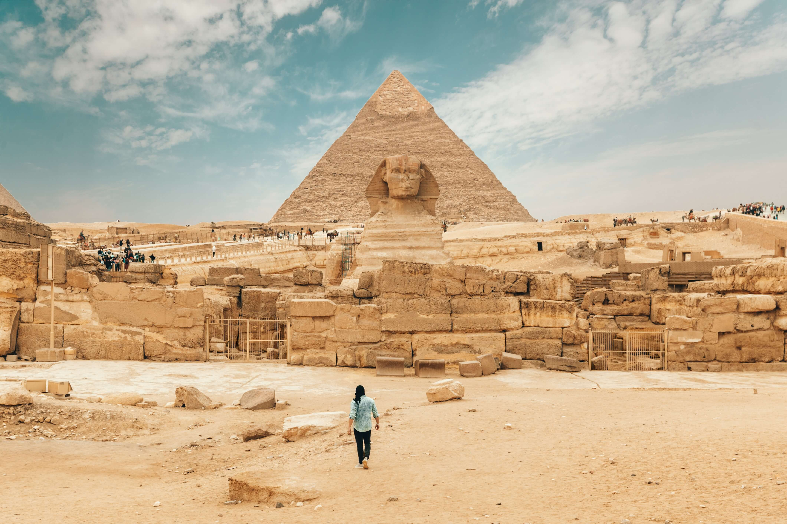

نبذة عن الرحلة
تصف أهرامات مصر الثلاثة بأنها أحد أهم عجائب الدنيا السبعة في جمهورية مصر تقع على هضبة الجيزة في محافظة الجيزة، أيضًا تقع على الضفة الغربية لنهر النيل، وهي تشمل ثلاثة أهرامات وهم خوفو، خفرع، منقرع، والتي بنيت قبل حوالي 25 قرنًا قبل الميلاد.
وهي مقابر ملكية كل منها يحمل اسم الملك الذي بناه والذي دفن فيه. وأفضل الأنشطة التي يمكنكم القيام بها في هذه الرحلة...يمكنكم الاستمتاع بجولة على ظهر الجمل، إذ تستطيعوا استئجار جمل والقيام بجولة حول هذه الأهرامات لتروا ضخامتها وعظمة بناء هذه الأهرامات قبل آلاف السنين، وتستطيعوا التقاط أجمل الصور التذكارية هناك.
